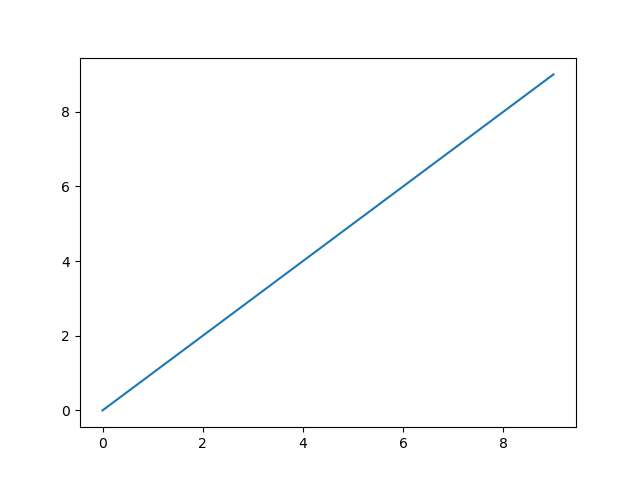
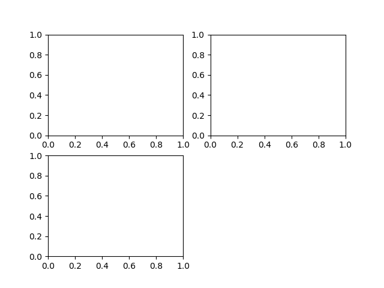
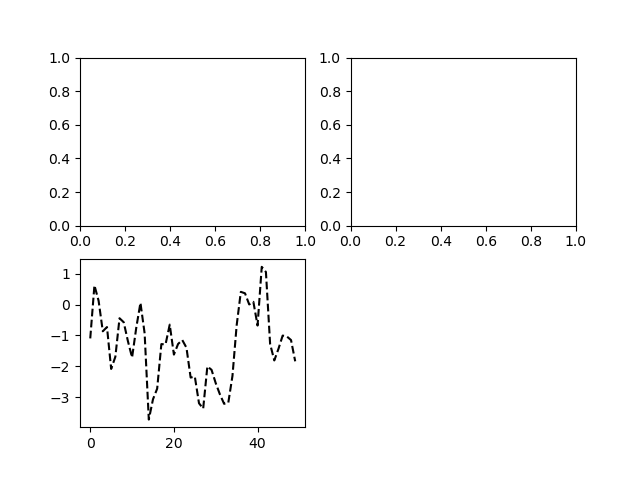
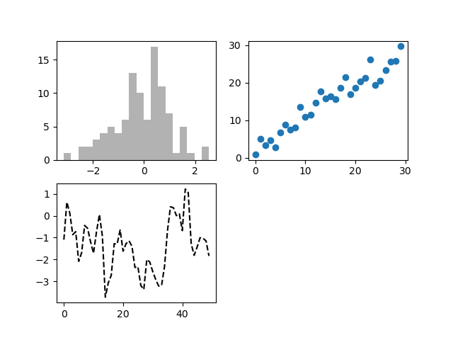
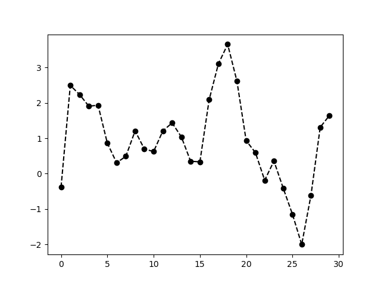
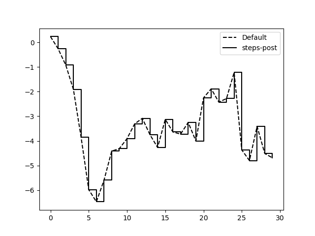
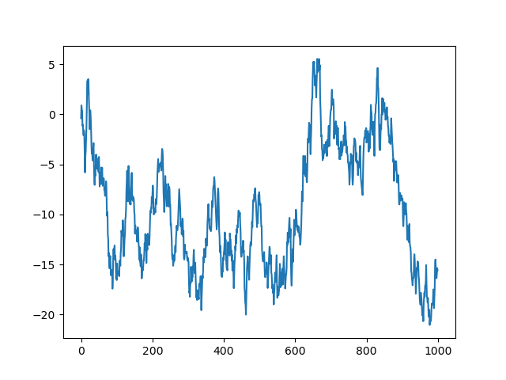
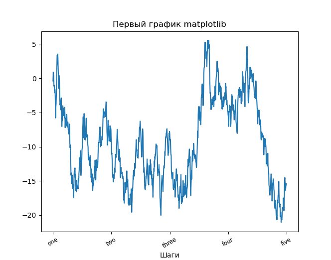
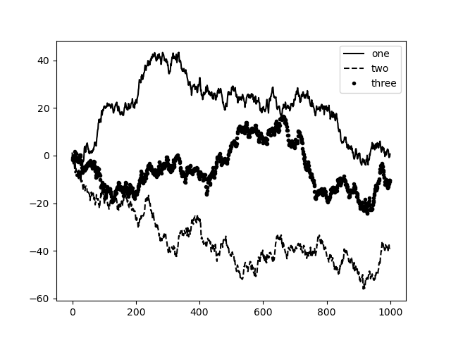

matplotlib
Для импорта библиотеки matplotlib будем использовать следующее
соглашение:
In [1]: import matplotlib.pyplot as plt
Ниже приведен пример построения простой прямой:
In [2]: import numpy as np
In [3]: data = np.arange(10)
In [4]: data
Out[4]: array([0, 1, 2, 3, 4, 5, 6, 7, 8, 9])
In [5]: plt.plot(data)
Результат представлен на рисунке 1
Рисунок 1: Построение простейшей прямой линии

Графики в matplotlib находятся внутри объекта Figure. Новый
рисунок можно создать с помощью plt.figure:
In [6]: fig = plt.figure()
В интерпретаторе IPython будет построено пустое окно, а в блокноте
Jupyter ничего не произойдет. Нельзя создавать окно с пустым
рисунком. Нужно создать один или несколько подграфиков (subplots),
используя функцию add_subplot
In [7]: fig.add_subplot(2, 2, 1)
Это означает, что рисунок должен быть размером \( 2 \times 2 \) (т.е. содержать максимум 4 графика), и мы выбрали первый из четырех графиков (нумерация начинается с единицы). Можно выбрать следующие 2 графика:
In [8]: ax2 = fig.add_subplot(2, 2, 2)
In [9]: ax3 = fig.add_subplot(2, 2, 3)
Рисунок 2: Пустой рисунок matplotlib с тремя графиками

Если выполнить команду построения графика, например, plt.plot([1.5, 3.5, -2, 1.6]),
вывод будет осуществляться в последний график последнего созданного
рисунка. Например, выполнение команды
In [10]: plt.plot(np.random.randn(50).cumsum(), 'k--')
даст следующий результат:
Рисунок 3: Визуализация данных простейшей командой

Выражение 'k--' задает стиль линии: черная штриховая линия.
Метод fig.add_subplot возвращает объект AxesSubplot, в который
можно напрямую выводить график:
In [11]: _ = ax1.hist(np.random.randn(100), bins=20, color='k', alpha=0.3)
In [12]: ax2.scatter(np.arange(30), np.arange(30) + 3 * np.random.randn(30))
Рисунок 4: Визуализация данных

Полный каталог типов графиков можно найти на сайте https://matplotlib.org/.
Основная функция plot библиотеки matplotlib принимает массивы
координат x и y и (опционально) строку, задающую цвет и стиль
линии. Например, для того чтобы построить зависимость y от x
зелеными штрихами, необходимо выполнить:
ax.plot(x, y, 'g--')
Таким образом, мы задали и цвет и стиль линии в виде строки. На практике при программном создании графиков использование строк не удобно. Такой же график можно построить с помощью команды:
ax.plot(x, y, linestyle='--', color='g')
Графики могут иметь также маркеры для выделения точек данных. Так как
matplotlib создает непрерывные линии, интерполируя значения между
заданными точками, может быть не ясно, где находятся заданные
значения. Маркеры могут быть частью строки, задающей стиль линии:
In [13]: from numpy.random import randn
In [14]: plt.plot(randn(30).cumsum(), 'ko--')
Рисунок 5: График с маркерами

Это же можно было записать более явно:
plot(randn(30).cumsum(), color='k', linestyle='dashed', marker='o')
Как видно, между последовательными точками строится линейная
интерполяция. Это поведение можно изменить с помощью параметра
drawstyle:
In [15]: data = np.random.randn(30).cumsum()
In [16]: plt.plot(data, 'k--', label='Default')
Out[16]: [<matplotlib.lines.Line2D at 0x7fb01ad92f70>]
In [18]: plt.plot(data, 'k-', drawstyle='steps-post', label='steps-post')
Out[18]: [<matplotlib.lines.Line2D at 0x7fb01ad15430>]
In [19]: plt.legend(loc='best')
Out[19]: <matplotlib.legend.Legend at 0x7fb01ad12d00>
Рисунок 6: Линии с разными значениями drawstyle

Для иллюстрации настройки графиков создадим простой рисунок и отобразим график случайного блуждания:
In [20]: fig = plt.figure()
In [21]: ax = fig.add_subplot(1, 1, 1)
In [22]: ax.plot(np.random.randn(1000).cumsum())
Out[22]: [<matplotlib.lines.Line2D at 0x7fb01ad29c10>]

Для изменения подписей на оси \( x \) воспользуемся методами set_xticks
и set_xticklables:
In [23]: ticks = ax.set_xticks([0, 250, 500, 750, 1000])
In [24]: labels = ax.set_xticklabels(['one', 'two', 'three', 'four', 'five'],
...:rotation=30, fontsize='small')
Параметр rotation поворачивает метки надписей на оси \( x \) на 30
градусов. И, наконец, зададим название графика и метку для оси \( x \) с
помощью методов set_title и set_xlabel:
In [25]: ax.set_title('Первый график matplotlib')
Out[25]: Text(0.5, 1.0, 'Первый график matplotlib')
In [26]: ax.set_xlabel('Шаги')
Out[26]: Text(0.5, 10.888891973024519, 'Шаги')

Модификация оси \( y \) осуществляется точно также, только нужно заменить
x на y в приведенном выше коде. У класса осей есть метод set,
который допускает пакетную настройку свойств графика. В предыдущем
примере можно было также написать:
props = {
'title': 'Первый график matplotlib',
'xlabel': 'Шаги
}
ax.set(**props)
Для вывода легенды графика есть несколько способов. Простейший
заключается в передаче аргумента label при построении графиков:
In [27]: fig = plt.figure(); ax = fig.add_subplot(1, 1, 1)
In [28]: ax.plot(randn(1000).cumsum(), 'k', label='one')
Out[28]: [<matplotlib.lines.Line2D at 0x7fb01acbd490>]
In [29]: ax.plot(randn(1000).cumsum(), 'k--', label='two')
Out[29]: [<matplotlib.lines.Line2D at 0x7fb01a7664c0>]
In [30]: ax.plot(randn(1000).cumsum(), 'k.', label='three')
Out[30]: [<matplotlib.lines.Line2D at 0x7fb01a7660a0>]
После этого можно вызвать ax.leend() или plt.legend() для
автоматического создания легенды:
In [31]: ax.legend(loc='best')

Можно сохранить активный рисунок в файл с помощью метода
plt.savefig. Например, чтобы сохранить рисунок в формате SVG
достаточно набрать:
plt.savefig('figpath.svg')
Тип файла определяется расширением. Есть пара важных параметров:
dpi, который задает разрешение рисунка (точек на дюйм),
bbox_inches, который может обрезать пустое пространство вокруг
рисунка. Например, чтобы сохранить тот же график в формате PNG с
разрешением 400 DPI, нудно выполнить:
plt.savefig('figpath.png', dpi=400, bbox_inches='tight')
Функция savefig сохраняет не только на диск. Она может записывать
график в любой файлоподобный объект, например в BytesIO:
from io import BytesIO
buffer = BytesIO()
plt.savefig(buffer)
plot_data = buffer.getvalue()
Таблица 1. Метод savefig: параметры
| Параметр | Описание |
fname | Строка, содержащая путь к файлу или файлоподобный объект Python. Формат рисунка определяется расширением файла |
dpi | Разрешение рисунка в точках на дюйм. По умолчанию 100 |
facecolor, edgecolor | Цвет фона рисунка вне графика. По умолчанию w (белый) |
format | Явное задание формата файла |
bbox_inches | Часть рисунка для сохранения. Если задано 'tight', 2будет попытка обрезать пустое пространство вокруг |